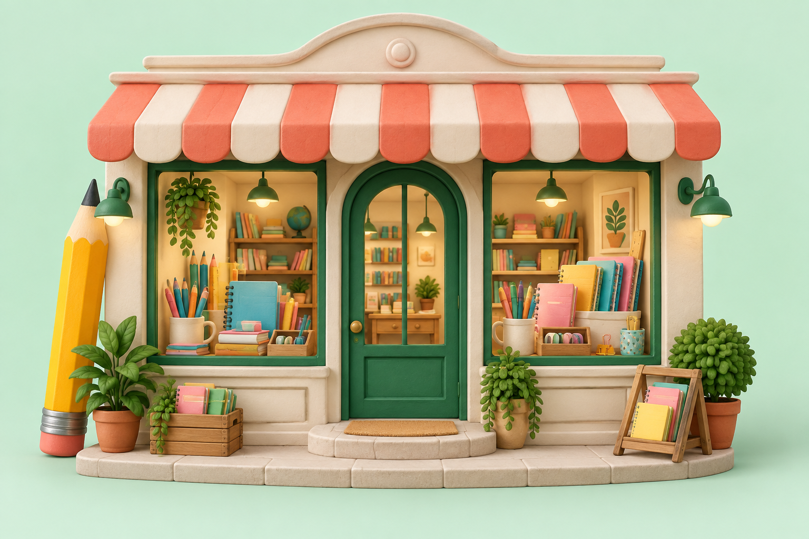

✳ اینجا خیال، رنگ میگیرد
دنیات رو
با خیال بکش!
یک مداد، هزار تا ماجرا.
به دنیای رنگی دکّان بهجت خوش اومدی؛
جایی برای نوشتن، ساختن و خودت بودن.
✦ برای دستهای کوچک و خیالهای بزرگ
✳✧
کشف کن ↓یه کم شیطنت کن! ↗
↔ بگیرشون، بچرخونشون، رهاشون کن!
نمایش سهبعدی روی این دستگاه در دسترس نیست؛ پایینتر روی تخته نقاشی کن!
۰۱ / از نزدیک ببین
یک مداد ساده.
یک دنیای پنهان.
قشنگی، فقط به ظاهر نیست.
روی مداد دست بکش و قصهٔ زیر پوستش رو ببین.
نمایش آموزشی ساختار مداد؛ مشخصات هر محصول در فروشگاه درج میشود.
آزمایشگاه کوچک بهجت ✷
روکش رنگی • چوب • مغزی گرافیتی
بدنهٔ چوبی مغزی گرافیتی روکش محافظ
۰۲ / نوبتِ دستهای توئه
اینجا خطخطی کردن آزاده!
یک ابزار بردار. یک رنگ انتخاب کن. بذار دستت، خیالت رو دنبال کنه.
بومِ خیال تو
قصهٔ تو از همینجا شروع میشهیک خط بکش…
مداد آمادهست!اشتباه نداریم، فقط ایدههای تازه داریم ♡

۰۳ / همین حوالیِ خیالدرِ دکّان
درِ دکّان
به روی تو بازه.
بوی دفتر نو، صدای تراشیدن مداد،
و رنگهایی که منتظر قصهٔ تو هستن.
دوست تازهات رو از دکّان پیدا کن.